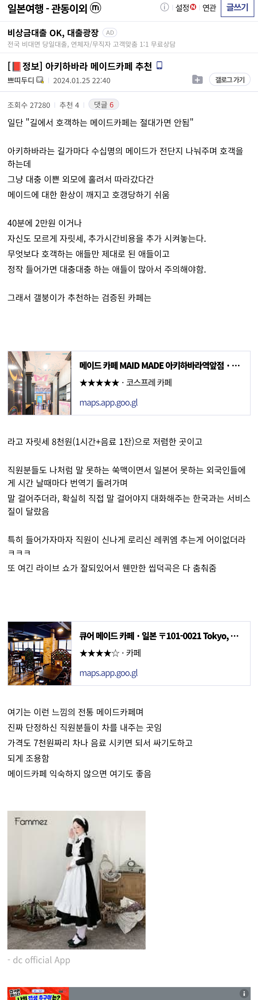
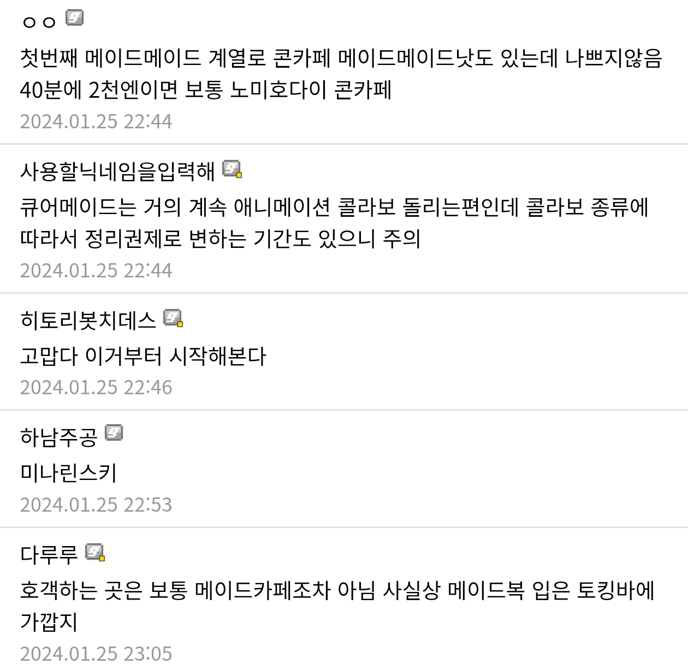
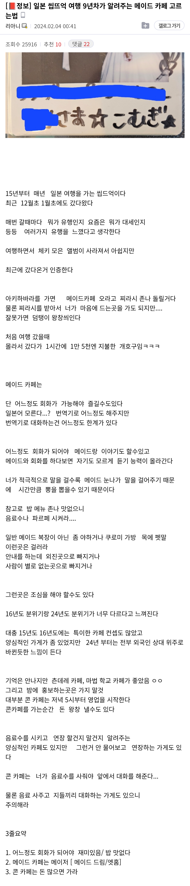
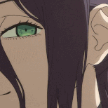

길에서 호객하는 여자들 이쁘고 귀엽지만 피하라는 내용
우산들고 지나가는데 매우 귀여운 여자가 '거기 우산들고 가는 오니상~'
해서 혹함



길에서 호객하는 여자들 이쁘고 귀엽지만 피하라는 내용
우산들고 지나가는데 매우 귀여운 여자가 '거기 우산들고 가는 오니상~'
해서 혹함
코메다 커피 괜찮더라
메이드가없자너
개귀엽네 ㅋㅋ
깐깐하게 생긴 백발중년 정통 메이드 까페도 있다더라
아키바 절대영역이라고하는 메이드카페있는데 여기 좋더라고
메이도리밍~ 메이도리밍~ 리밍이 좋아~
잘되는데는 호객이 필요 없지
한마디로 일본여행 갤러리에서 물어보면 된다는 뜻이군

정혁 메이드카페 보고 나서 간극이 더 클 거 같아서 갈 용기가 안 생김... ㅠㅠ
거상하러간다...
근데 메이드 카페 왜 가는거야?메이드랑 대화하려고? 글만 보면 술 안파는 합법적 보도방 인것같네
그냥카페가면 안됨?